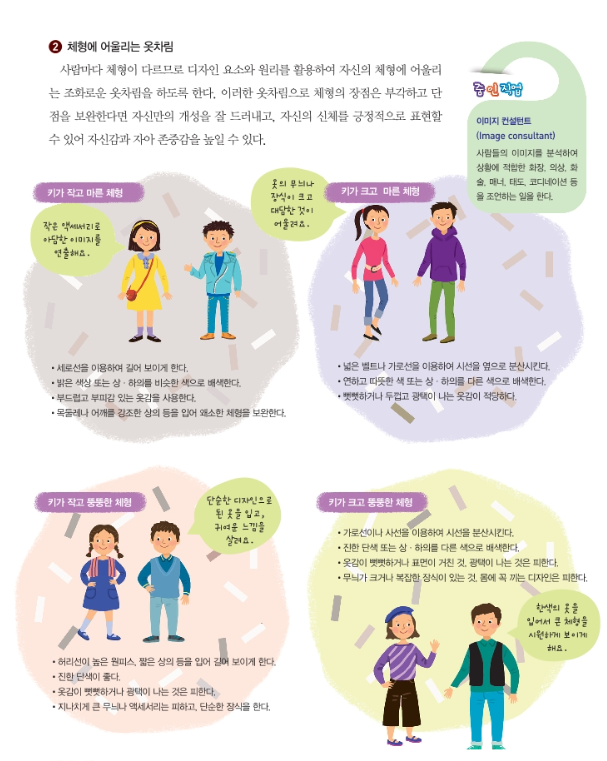

청소년기의 옷차림
긍정적인 자기 표현
1. 옷차림은 입은 사람의 신분, 지위, 개성, 인상을 표현, 타인에 대한 배려와 예의를 나타낸다.
2. 자신에게 어울리는 옷차림을 통한 긍정적 표현으로 인해 심리적 만족감을 얻고, 자아 존중감도 높일 수 있다.
3. 무조건 유행에 따르거나 비싼 옷을 입기보다는 자신의 개성과 이미지를 효과적으로 표현할 수 있는 옷차림에 관심과 노력을 기울인다.
4. 좋은 인상을 만들려면 신체성장과 활동에 불편함에 없고, 학생의 신분에 맞고, 청결하고 상황과 분위기에 맞고 신체 장점을 살리고 단점을 보완하는 옷차림을 선호한다.
자기 표현과 신체 보호의 조화
개성뿐만 아니라, 신체 보호도 가능한 건강한 옷차림이 필요하다.
평소 옷차림 : 표현의 기능으로 장식 욕구, 개성, 예의, 소속을 모두 표현할 뿐만 아니라 보호의 기능도 가진 옷차림이어야 한다.
청소년기 옷차림 : 성장에 방해되지 않도록 적당한 여유분이 있고, 활동하기 편한 옷차림이어야 한다. 반드시 속옷을 착용해야 한다.
디자인 요소
디자인 요소들을 활용한 착시현상을 이용하면 신체의 장점을 살리고 단점을 줄일 수 있다. 또, 자신의 개성을 효과적으로 나타낼 수 있다.

[교과서의 사진을 가져왔습니다]